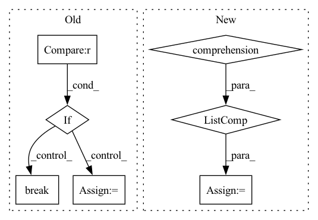

Pattern ID :955
Before Change
loop = tqdm(test_loader)
for batch_idx, frames in enumerate(loop):
if i >= 10 : break
frames = frames.to(DEVICE) // [1, T, 3, h, w]
frames_vis = postprocess_img(frames.squeeze(dim=0)) // [T, 3, h, w]
input = frames[:, :VIDEO_IN_LENGTH] // [1, t, 3, h, w]
pred_rgb = pred_rgb_model.pred_n(input, pred_length=VIDEO_PRED_LENGTH) // [1, T, 3, h, w]
pred_rgb_vis = postprocess_img(pred_rgb) // [T, 3, h, w]
pred_rgb = torch.cat([input, pred_rgb], dim=1)
pred_rgb = torch.stack([seg_model(pred_rgb[:, i]) for i in range(pred_rgb.shape[1])], dim=1)
pred_rgb = pred_rgb.argmax(dim=2).squeeze() // [T, h, w]
pred_then_colorized_vis = colorize_semseg(postprocess_mask(pred_rgb), num_classes=SYNPICK_CLASSES) // [T, 3, h, w]
frames_seg = [seg_model(frames[:, i]).argmax(dim=1) for i in range(frames.shape[1])]
frames_seg = torch.stack(frames_seg, dim=1) // [1, 1, h, w]
input_seg = frames_seg[:, :VIDEO_IN_LENGTH] // [1, t, 1, h, w]
pred_mask = pred_mask_model.pred_n(input_seg, pred_length=VIDEO_PRED_LENGTH)
pred_mask = pred_mask.argmax(dim=2) // [1, T, 1, h, w]
pred_mask = postprocess_mask(torch.cat([input_seg, pred_mask], dim=1).squeeze()) // [T, h, w]
pred_mask_vis = colorize_semseg(pred_mask, num_classes=SYNPICK_CLASSES) // [T, 3, h, w]
frames_colorized = colorize_semseg(postprocess_mask(frames_seg.squeeze()), num_classes=SYNPICK_CLASSES).unsqueeze(dim=0) // [1, T, 3, h, w]
frames_colorized_vis = postprocess_img(frames_colorized.squeeze(dim=0)) // [T, 3, h, w]
input_colorized = frames_colorized[:VIDEO_IN_LENGTH]
colorized_then_pred = pred_colorized_mask_model.pred_n(input_colorized, pred_length=VIDEO_PRED_LENGTH)After Change
pred_then_colorized_vis = colorize_semseg(postprocess_mask(pred_rgb), num_classes=SYNPICK_CLASSES).transpose(0, 3, 1, 2) // [T, 3, h, w]
frames_seg = torch.stack([seg_model(frames[:, i]) for i in range(frames.shape[1])], dim=1).argmax(dim=2) // [1, T, 1, h, w]
frames_seg_in = torch.stack([(frames_seg == i) for i in range(SYNPICK_CLASSES)] , dim=2).float() // [1, T, c, h, w] one-hot float
input_seg = frames_seg_in[:, :VIDEO_IN_LENGTH] // [1, t, c, h, w]
pred_mask = pred_mask_model.pred_n(input_seg, pred_length=VIDEO_PRED_LENGTH).argmax(dim=2) // [1, n, 1, h, w]
pred_mask = torch.cat([input_seg.argmax(dim=2), pred_mask], dim=1).squeeze() // [T, h, w]In pattern: SUPERPATTERN
Frequency: 4
Non-data size: 7
Instances Fragment ID: 4524613
Project Name: ais-bonn/vp-suite
Commit Name: 13016d4ab8ba4f8e7ee087155a6c5171f4d00ba3
Time: 2021-08-02
Author: boltres@ais.uni-bonn.de
File Name: scripts/visualize_4_way.py
M Class Name: AnonimousClass
N Class Name: AnonimousClass
M Method Name: visualize_4_way(1)
N Method Name: visualize_4_way(1)
M Parent Class:
N Parent Class:
M File Name: scripts/visualize_4_way.py
N File Name: scripts/visualize_4_way.py
M Start Line: 16
M End Line: 73
N Start Line: 17
N End Line: 74
Before Change
i = 0
loop = tqdm(test_loader)
for batch_idx, frames in enumerate(loop):
if i >= 10 : break
frames = frames.to(DEVICE) // [1, T, 3, h, w]
frames_vis = postprocess_img(frames.squeeze(dim=0)) // [T, 3, h, w]
input = frames[:, :VIDEO_IN_LENGTH] // [1, t, 3, h, w]
After Change
pred_then_colorized_vis = colorize_semseg(postprocess_mask(pred_rgb), num_classes=SYNPICK_CLASSES).transpose(0, 3, 1, 2) // [T, 3, h, w]
frames_seg = torch.stack([seg_model(frames[:, i]) for i in range(frames.shape[1])], dim=1).argmax(dim=2) // [1, T, 1, h, w]
frames_seg_in = torch.stack([(frames_seg == i) for i in range(SYNPICK_CLASSES)] , dim=2).float() // [1, T, c, h, w] one-hot float
input_seg = frames_seg_in[:, :VIDEO_IN_LENGTH] // [1, t, c, h, w]
pred_mask = pred_mask_model.pred_n(input_seg, pred_length=VIDEO_PRED_LENGTH).argmax(dim=2) // [1, n, 1, h, w]
pred_mask = torch.cat([input_seg.argmax(dim=2), pred_mask], dim=1).squeeze() // [T, h, w] Fragment ID: 4524612
Project Name: ais-bonn/vp-suite
Commit Name: 13016d4ab8ba4f8e7ee087155a6c5171f4d00ba3
Time: 2021-08-02
Author: boltres@ais.uni-bonn.de
File Name: scripts/visualize_4_way.py
M Class Name: AnonimousClass
N Class Name: AnonimousClass
M Method Name: visualize_4_way(1)
N Method Name: visualize_4_way(1)
M Parent Class:
N Parent Class:
M File Name: scripts/visualize_4_way.py
N File Name: scripts/visualize_4_way.py
M Start Line: 16
M End Line: 73
N Start Line: 17
N End Line: 74
Before Change
if word_idx is None:
raise ValueError(f"Couldn\"t find "{word}" in "{prompt}"")
for idx, token in enumerate(tokens):
merge_idxs.append(idx)
if "</w>" in token:
curr_token += token[:-4]
if idx >= word_idx and curr_token == word :
break
curr_token = ""
curr_idx += 1
merge_idxs.clear()
else:After Change
// if the word contains more than one token
if len(w_token) > len(search_tokens):
// check to see if the extra tokens were from punctuation
no_punc = [t for t in w_token if t not in punc_tokens]
search_no_punc = [t for t in search_tokens if t not in punc_tokens]
if no_punc and no_punc == search_no_punc:
merge_idxs += calc_token_positions(idx, len(search_tokens))
word_idx = idx Fragment ID: 4524641
Project Name: castorini/daam
Commit Name: 854e6ddfdae1781009b31b66b2d5bb15d852fccf
Time: 2022-12-08
Author: alotofcatz@gmail.com
File Name: daam/utils.py
M Class Name: AnonimousClass
N Class Name: AnonimousClass
M Method Name: compute_token_merge_indices(5)
N Method Name: compute_token_merge_indices(5)
M Parent Class:
N Parent Class:
M File Name: daam/utils.py
N File Name: daam/utils.py
M Start Line: 53
M End Line: 90
N Start Line: 54
N End Line: 91
Before Change
node.best_resources = h
elif overall_best is None:
overall_best = c
if node not in dp_point_backs :
break
egress_cost = dp_point_backs[node][h][2]
node = dp_point_backs[node][h][0]
if minimize_cost:
logger.info("\nOptimizer - plan minimizing cost (~${:.1f}):".format(After Change
"\nOptimizer - plan minimizing run time (~{:.1f} hr):".format(
overall_best / 3600))
// Do not print Source or Sink.
message_data = [
t for t in message_data
if t[0].name not in ("__source__", "__sink__")
]
message = tabulate.tabulate(reversed(message_data),
headers=["TASK", "BEST_RESOURCE"],
tablefmt="plain")
logger.info(f"\n{message}\n") Fragment ID: 4524579
Project Name: skypilot-org/skypilot
Commit Name: 87c6f76b628db89e65db669ed8375eac2714f1c2
Time: 2021-11-03
Author: concretevitamin@users.noreply.github.com
File Name: prototype/sky/optimizer.py
M Class Name: Optimizer
N Class Name: Optimizer
M Method Name: read_optimized_plan(4)
N Method Name: read_optimized_plan(4)
M Parent Class: object
N Parent Class: object
M File Name: prototype/sky/optimizer.py
N File Name: prototype/sky/optimizer.py
M Start Line: 242
M End Line: 274
N Start Line: 247
N End Line: 284
Before Change
for i in range(self.n_species):
j=0
while True :
if self.species_names[i]==self.model_yaml["species"][j]["name"] :
break
else:
j= j+1
self.nasa_low[i, :] = torch.Tensor(self.model_yaml["species"][j]["thermo"]["data"][0])
After Change
self.nasa_low = torch.zeros([self.n_species, 7]).to(self.device)
self.nasa_high = torch.zeros([self.n_species, 7]).to(self.device)
yaml_species = self.model_yaml["species"]
yaml_species_names = [s["name"] for s in yaml_species]
for i, species in enumerate(self.gas.species_names):
index = yaml_species_names.index(species) Fragment ID: 4524586
Project Name: deng-mit/reactorch
Commit Name: 548872c02939f6844fee1c58cc4e4fa7dad89f61
Time: 2020-09-11
Author: jonhnstein@qq.com
File Name: reactorch/import_kinetics.py
M Class Name: AnonimousClass
N Class Name: AnonimousClass
M Method Name: set_nasa(1)
N Method Name: set_nasa(1)
M Parent Class:
N Parent Class:
M File Name: reactorch/import_kinetics.py
N File Name: reactorch/import_kinetics.py
M Start Line: 6
M End Line: 21
N Start Line: 8
N End Line: 15